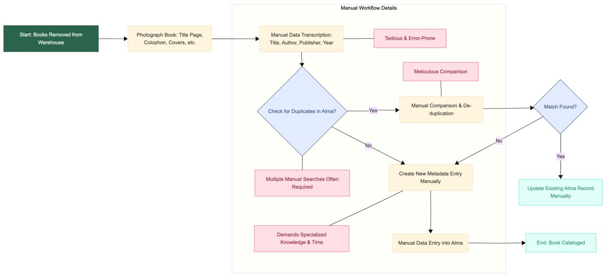
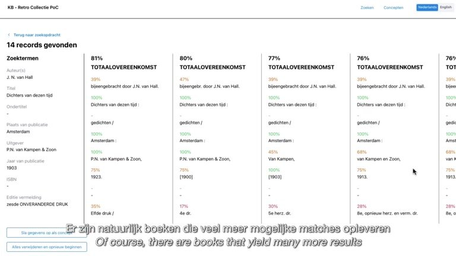
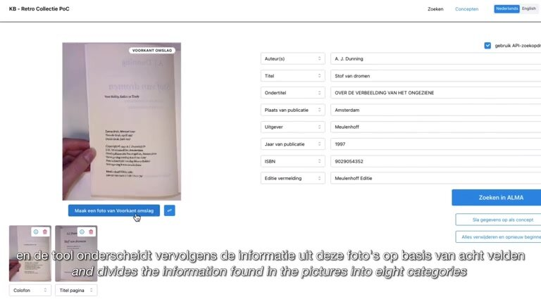
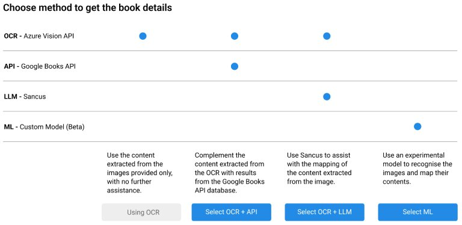

KB RetroTool: AI proposes, the cataloguer decides.
An AI-assisted cataloguing tool for the National Library of the Netherlands. I was Product Owner of the 6-person Scrum team that built it, and led its design.
Role
Product Owner and lead designer
Team
6-person Scrum team at DEUS.AI, with the KB's project manager and cataloguers in every review
Duration
2023–2024, in three phases
Outcome
40–50% less time per book, and a projected ~18 months gained on the library's 2030 digital heritage target.
The KB's own preview of the tool: a cataloguer walks through a real book, from the document camera to the match in the catalogue. Dutch with English subtitles, 3 minutes.
01
Context
The KB collects everything published in the Netherlands, and fills the gaps with donated and second-hand books: the "retro collection".
Before a book can join, a cataloguer checks whether the KB already holds that edition in Alma, its cataloguing system, and if not, writes a basic record. More than 50,000 donated books were waiting.
DEUS.AI built the RetroTool as a proof of concept that cataloguers tested on real books. It uses OCR, machine learning and large language models to read a book and find its match.
02
Problem
Each book took a cataloguer 15 to 20 minutes of searching and typing, and the backlog grew faster than the team could clear it.
Most of that time went into three jobs: searching Alma for duplicates, often several searches for one book; typing title, author, publisher and year by hand; and writing a record from scratch when the book was new. Hand-typed records also varied in quality.

The manual workflow, mapped with cataloguers. Red marks where the time went: repeated searches, manual comparison and records written from scratch.
03
My role and what I owned
I owned the product backlog, the sprint priorities and the roadmap, and I led the design. The research, the decision about what to build next and the screens came from the same person.
Backlog, priorities and roadmap, with success metrics for each phase.
Research with cataloguers: observation, interviews and workflow mapping.
Stakeholders: the KB's project manager and cataloguers took part in every review.
Design: flows, wireframes and the capture and review screens.
Engineers built the OCR, matching and Alma integrations. The AI team connected Sancus, DEUS.AI's retrieval product, as one of the methods. Cataloguers tested each increment on real books.
The roadmap, with a success metric per phase
1 · Core
To Q2 2023. Photo capture, OCR, Alma search, basic review and correction. Success: OCR accuracy above 85%, Alma identification above 70%.
2 · Refinement
Q3–Q4 2023. Writing to Alma, better field mapping, drafts, barcode search, duplicate detection. Success: less manual entry, mapping accuracy above 90%.
3 · Scale
From Q1 2024. Monitoring, more book types and workflows, ML field suggestions. Success: processing capacity and adoption.
04
Key decisions and trade-offs
Decision 1Show why a record matches
I watched cataloguers decide whether two books are the same edition. They judge it field by field, not as a whole. So candidate records sit side by side, each with an overall score and a score per field. A 100% title next to a 40% year tells the cataloguer to check the edition before saying yes.
Chosen
A match score for every field of every candidate.
Rejected
One "match" or "no match" answer. It is cleaner, but it asks an expert to trust a result they cannot inspect.
Trade-off
A denser screen. The decision stays with the expert, and the scores make it quick.

A book with 14 candidates, each field scored.
Decision 2Capture first, review, then search
The title page and the colophon hold almost everything a record needs. Capture is two photos under a document camera; OCR fills eight fields that map to Alma. The cataloguer glances over the fields, then one button searches.
Chosen
A short human review between OCR and search. Every field stays editable and nothing reaches Alma until a person confirms.
Rejected
Searching automatically straight from the photo. A wrong field means a wrong search, and nobody sees why.
Trade-off
A few seconds per book. Cataloguers would only rely on the tool if fixing it was faster than typing.

The colophon, the filled fields and Search in Alma.
Decision 3Let the experts choose the method
We tested OCR services, language models and a custom matching model on real title pages. Azure Vision read old and unusual typography best, so it became the OCR. But no single method read every book well.
Chosen
Four methods the cataloguer can switch between: OCR only, OCR with Google Books, OCR with an LLM through Sancus, or an experimental custom model.
Rejected
Shipping one fixed method. We would have lost the fallback for hard books, and the comparison data from real use.
Trade-off
Technical names in a tool for cataloguers. Acceptable for an expert pilot, not for a wider rollout.

The method chooser. Each option says in one line what it adds.
05
Outcome
40–50%
less time per book: from 15–20 minutes to about 8–12.
98%
accuracy in finding duplicates already in Alma.
~18 months
projected gain on the KB's 2030 roadmap for the retro collection.
"This is already much faster than removing doubles from the retro collection by hand."
A cataloguer at the KB, in the preview video.
The team also reported records 25% more complete than hand-typed ones, and 500 to 700 more books processed a month. Figures are as reported by the project team; time is measured per book against the 15–20 minute baseline, and the 18 months is a projection.
06
What I'd do next
Measure inside the tool, and make the methods speak the cataloguer's language.
Instrument from day one. Results should line up one to one with the success metrics set for each phase, without a separate count.
Name methods by outcome. "Text from photos" and "add online sources" instead of model names, with a sensible default.
Widen the pilot. More book types and workflows, as planned for phase 3.
Let's talk about your product.
I'm based in Porto and work remotely, hybrid or on site.